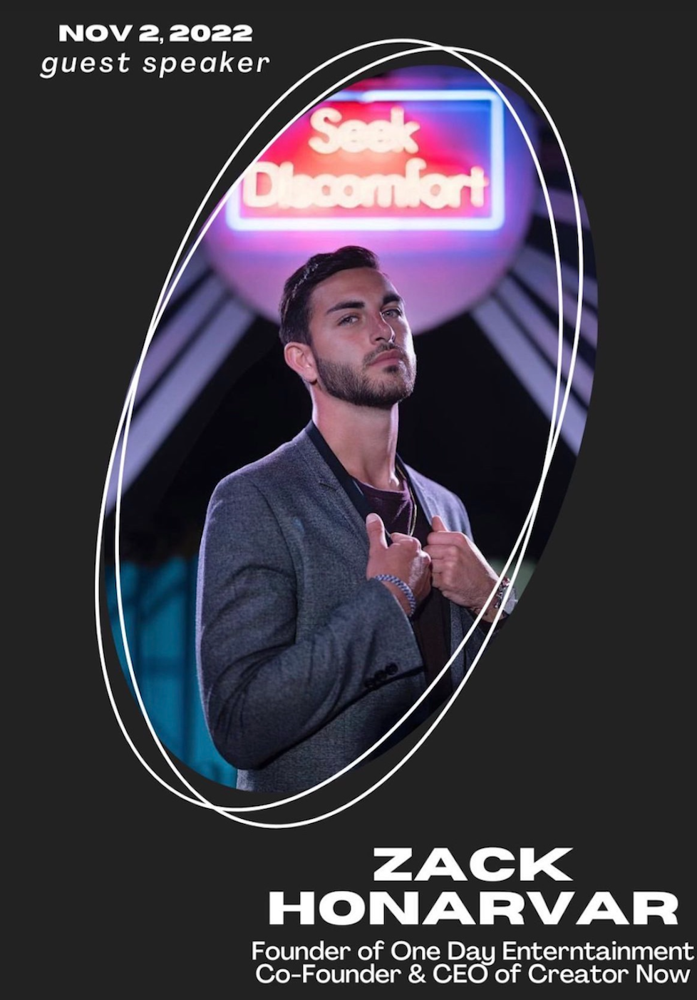
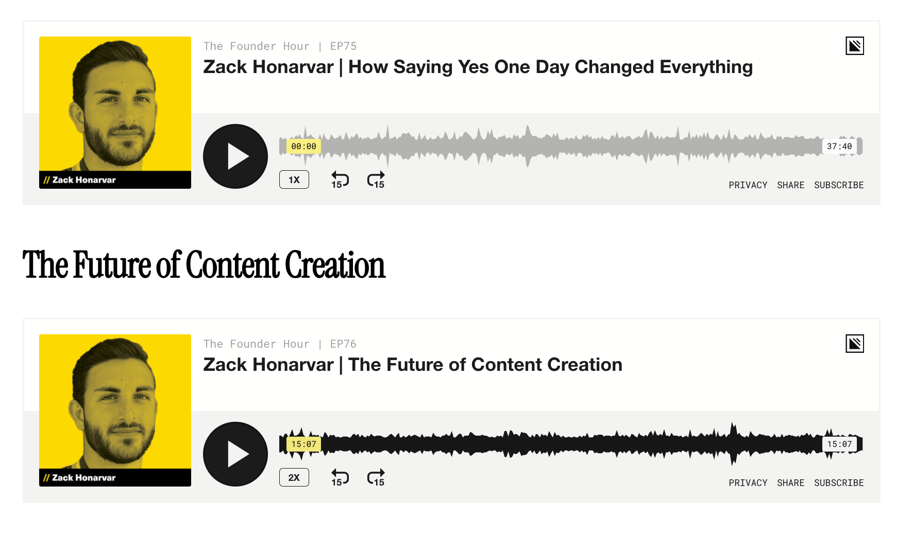

Zack Honarvar (Manager of Airrack and Yes Theory) Podcast Notes
On November 2nd, 2022, Zack Honarvar - then the Manager of Airrack and Yes Theory - came to USC to give a talk both talking about his background and to give advice to USC Students interested in pursuing a career in the creator economy.
Caption: A flyer advertising the talk to my club's members.
Caption: Zack and I when we ran into each other at Coachella 2025 2-1/2 years after his Fall 2022 USC Talk
I took a lot of notes during the talk on my iPhone notes app and finally got around to synthesizing them into a blog post about a month ago.
In the blog post synthesizing those notes from his 2022 USC talk, I also did an extensive deep dive on his 2018 talk "How to Hack The Corporate World To Become An Entrepreneur" that, in his 2022 talk, he recommended we watch ], and he gave a ton of useful advice which was even more applicable to people my age since he hadn't started his first business yet but was about to.
Looking back, in early 2026, which is over 3 years since his late 2022 talk, which itself was over 4 years after his 2018 talk, he's only become more and more successful as time has gone on and it's clear that he knows what he's talking about when it comes to all things entrepreneurship.
He's clearly a winner in the space, so I thought it that for this article, it would be worth revisiting a couple of his older podcast appearances - from 2019 and 2022 - and take notes, and see how close his predictions were to coming true.
Spoiler alert, he turned out to be very right.
What I like about Zach is that he's a true entrepreneur and businessman and not just some online "business guru" who's trying to sell you a course. This guy has genuinely build and sold multiple seven and eight figure businesses and has no agenda on his podcast appearances.
And his entrepreneurship principles are universal and often translate across disciplines and they stand the test of time - what he taught in 2018 or 2019 is just as relevant if not more relevant than ever today.
Without further ado, let's dive right into the analysis!
The first podcast I'm going to take notes on is from March 2019, oneof Zack's early podcast appearances, before TikTok was really a huge thing and only one year after he took the plunge to full time entrepreneur.
He started off mentioning that he was born in Iran and then moved to Toronto Canada at 4 years old.
He talked about his childhood and he also went through school and talked about his view that most of what he learned in early school wasn't super relevant to his future.
He then went to college and studied economics and business. He knew that he wanted to be an entrepreneur, but his first initial thoughts going into university were that this would be a good way to both establish connections and learn the ropes of business while he came up with his idea(s).
He did mention that business school didn't teach him and real or relevant business skills at all though, but what it did give him was his network and that it "put him in the room."
It didn't necessarily give him useful skills, in his opinion, but again, it unlocked the next set of opportunities for him at least.
He also thinks that university taught him how to work hard due to the deadlines, etc. even though most of what he learned wasn't really that practical. And that working hard translated well to becoming an entrepreneur.
People said to him that "college are the best years of your life" and he HATED hearing that. He wanted to set the roots and foundation to make sure that they weren't the best years of his life.
He was ALWAYS looking for opportunities and ways ot make money.
He was always looking for some opportunity to create a supply/demand scenario where he could provide some type of service or product that the prople around him wanted or needed.
And he also just needed to get the minimum grades. He mentioned that, in his opinion, people don't look at your grades but just see that you have the piece of paper.
And that a lot of entrepreneurs actually had this mindset too, and then went super risky in the startups and businesses they evtnaully wanted to start.
As a side-note -- I literally just saw an instagram reel (as of Feb 2026) of a more recent college dropout/entrepreneur - Roy Lee, CoFounder of Cluely AI, mentioning he did this exact same thing. He did the minimum viable effort for his CS classes, even racking up a lot of C- grades, but he poured the vast majority of his energy into his side-business and eventually started Cluely and dropped out, which turned out to make him a billionaire.
So Zack, as always, was right on here.
Another thing is that College taught Zack what he DIDN'T want to do!
For example, he worked at a company called SunLife Financial and learned he DIDN'T want to get into investment banking - more on this later.
As far as side hustles he tried in college, he started a tutoring company and hired people to tutor students for exams at class, and they made good money.
This consisted mainly of review sessions for big classes right before exams, led by people who excelled in the classes before. Zack paid the people $60/hour to lead these review sessions (~2-3 hours each) and charged the students ~$10-15/hour to get in the door for the review sessions (they'd always fill up super well).
He'd market these by standing out the lecture halls of the class after the class ended and handout flyers for it and always get an insane turnout.
This wasn't his long term game, but was a decent revenue driver in the short term.
He was always asked what he wanted to be long-term though, and he always said "entrepreneur," but people always then asked "what's your million dollar idea?"
And Zack didn't know what his eureka moment or big idea would be at the time, BUT he realized that if he didn't have the skills set up for hiring, or marketing, or sales, that he would let that opportunity pass by him and not be able to take advantage of it.
So at some point, he also said to himself that "this idea doesn't have to be it," and that he would dive into every opportunity with a learning mindset and that those skills would then transfer whenever the big idea did eventually come.
Zack also talked about how he was dead broke and his laptop broke, and how he needed a new one in order to learn entrepenership, but he couldn't afford it.
In a super creative move, he strategically approached a ton of local businesses and said he would etch their logos in the back of his laptop and also write articles about them if he was able to raise enough money to get one and if he was able to do with it what he wanted, and he did - having earned enough $$ (~$1600) to get a Macbook Air and then becoming known as "the entrepeneur guy" around campus after that.
He treated his laptop as advertising space, came up with a creative solution and story to sell the space, and it worked out super well for him despite being an absolutely broke student deeply in debt at the time.
He went on to work at Sunlife Financial full-time since they offered him the most money, and to both save up for being an entrepreneur and to pay off his student loans as soon as possible, but he found it super draining and that it sucked the entrepeneurial energy right out of him.
He realized that what you do with your 9-5 can influence your 5-9 hustle and really drain you.
So he quit and decided to do a sales job - even if it paid a lot less at first - and that it needed to be at a startup.
He determined that sales was the number one skill for being an entrepreneur and that being at a startup specifically would allow him to wear a lot of hats and allow him to have the biggest impact on the business.
So he went on to Shopify, and that's where he spent the next 3+ years!
Over the next few years, Shopify went from a few hundred people when he started to over 4,000.
He specifically was in enterprise sales, which is essentially selling to large companies.
Sales Skills.
Being able to figure out what the process of successfully selling something is.
And switching the conception in his mind of what sales is.
Sales ISN'T being able to sell anything to anyone or convincing someone that they want something (that they don't need).
Instead, sales is about just finding people who are interested in the thing and removing the frictions and the unknowns and if they need it, and if so, what version they need.
Sales is NOT slimy in his opinion, but you should reframe it to what's above.
Networking With Founders at Shopify
He was also super lucky to get the opportunity to get on the phone with a ton of founders during his time at Shopify.
A lot of his conversations were about learning about those businesses, getting on the phone with those founders, since understanding them and their business models helped him sell better.
Then he would mention to them "this is what we provide, and in my opinon, how you can take your business ot the next level."
So because of this, he was able ot get exposure to a ton of different business models, which later on helped him become an entrepreneur.
The question he always asked himself is "this is what they (these businesses) need, and this is how they get to the next level..."
In his interview, he boldly said that "this is gonna be the last job I'm ever gonna have. I'm gonna quit my job one day and become an entrepreneur. As long as you guys are ok with me using you guys to learn these sales skills, then we have an agreement."
And surprisingly and awesomely, Shopify was like "WE LOVE YOUR TRANSPARENCY, Hell yeah! We just want people who are down to learn how to sell."
And while he was there, it allowed him to work very entrepreneurially.
And as long as you're good in sales, you can do whatever the heck you want in your company.
He also paid his student loans off and kept learning a ton.
When He Quit Shopify
Eventually though, he wrote in his journal that "I don't feel like I'm learning anymore, so change needs to happen." Where he wasn't learning anything substantially more than he was 6 months, 1 year earlier.
Earleir on, he was figuring out a new business, or learning a new tactic and how it has success, or learning how to start the call talking about them and not me, or learning not to care about the deal too much, how to manage people, etc. - he started to accumulate all of these skills, but eventually plateaud in learning.
What He Did Afterwards
During his time at Shopify, he'd come to LA all the time to work with these brands and so on and so forth, and eventually met the yes theory guys.
Someone who knew both Zack and Yes Theory said they should meet and he made the intro between the two. They immediately hit it off and had shared values, and Yes Theory said "if you're ever back in LA, stay on our couch" and coincidentlaly he was back in LA a week later.
He loved the community that hung out around the Yes Theory house so he said yes to that instead of staying in the hotel room that Shopify always paid for when he visited LA since he wouldn't meet anyone cool or interesting at the hotel.
One of the times Zack was over, the Yes Theory guys were looking over a potential merch deal/contract and they asked Zach if he could look it over and help them.
Since he was working in apparel at Shopify, he was able to connect and get them set up properly, and go from there.
Some of their other creator friends doing merch asked them how they got setup and they referred them to Zack, and from there he decided to start an apparel / merchandising company with Yes Theory called "Fan of a Fan."
He also fell in love with Venice (Beach) and (for good reason!) and decided to move in LA a few months later after he would wrap things up with Shopify.
Instead of quitting right on the spot, he interestingly enough went up to Shopify next time he was back in Toronto and said "Hey Listen! I think the next thing for me entrepreneurially is in LA, but I'm not ready to leave you guys yet. Is there a way that you guys can send me to LA?" and Shopify was like "Let's figure this out."
Then next time he talked to Yes Theory, they said "Hey, you should manage us on the side" and that's when he went in his journal and wrote "I'm not learning anything anymore" and decided right then and there to take the entrepreneurial leap.
So he decided to manage the guys full time and open up his One-Day Entertainment office.
Moving to LA & His Approach To Going Full Time
So it took 4 months for his VISA to get approved (since he was moving from Canada to the USA), so in the meantime he built his confidence in his entrepreneurial venture by doing a TON of research in his spare time since he didn't know ANYTHING about content creation back then.
So he did his research and felt condifent, then the day of the flight was when Will Smith responded to Yes Theory and then 1 week later, Zack's meeting with WIll Smith's manager of 17 years which was amazing!
The learning curve, as a consequence, was so much steeper, and he ended up learning what would take most people years to learn, he learned in months.
On Dealing With Negative Self-Talk
The negative self-talk he had in his mind before leaving for LA, quitting his job, was that he would decide major life decisions in ONE DAY and then commit to things FULLY and have those negative thoughts dissapear as soon as he makes the decision.
On Additional Mindset Stuff
Setting attainable goals for yourself and achieving those is a great way to build self-confidence.
In addition, don't think "if something worked out for this person, it won't work for me." Instead, Zack has the mindset "If it worked out for them, I'll be able to figure out a way to to it too" which is a huge mindset shift.
If he wants to do something, he thinks he can, it's just a matter of time until he does it.
Once you have these mindsets and execute on prior goals, you should be able to have conviction in similar leaps in the future.
Zack's Predictions on The Future of Content Creation (in 2019)
After talking about Zack's backstory in the previous segment, his new segment talked about his views on the future and direction of content creation as he saw it in 2019.
This segment is probably more valuable to most readers than his backstory (which itself has A TON of great lessons in it), and the thing is - his predictions that he said here in March 2019 about short-form video taking off, and social media platforms shifting towards a Mobile-first approach and the way content businesses work (content/marketing first, producrt later) were SPOT ON for what was going to happen in the years ahead.
And this was before TikTok was even a thing yet, so the fact that he got these predictions right in early 2019 (and the fact that he continues to spot upcoming trends to the modern day) is incredible and a testament to how much of a business genius he is when it comes to the content world.
The Business Structure of Content Creation
When asked how he thinks content creation will change in the next 5-10 years, Zack started off giving a unique answer which contrasted how content works compared to traditional businesses.First, he said that traditional businesses like Nike, or Apple, or Lululemon started off with either a physical product or a service, and then in order to build a brand around that product they would build content around it after.
What's different about content creation, in a business sense, is that they start first with that content, and then that content expands to creating physical products or services that vibe with the content (content first, products/services later).
With Yes Theory for example, the content was a philosiphy and an ideology. And that makes people feel a certain way.
And you have to be careful to build a business around it so that it vibes in a good way with the content.
In his opionion, you should keep the main thing - the content - free, and build businesses around it so you can transact with the audience in that way.
Everything's Going Mobile
He noticed that as of 2019, and the year or two before, he saw everyone at shopify and on youtube and so on as going mobile and using those aps on their phones way more than their computers etc.This prediction of Zack's was SPOT ON, looking back on it.
Furthermore, he expanded to say that he was extremely bullish on short-form video, which looking back, is another VERY CORRECT prediction, and it's more insane he's doing that particularly since he's predating TikTok or any short-form vertical platforms taking off.
Funny enough though, he thought that IGTV would be the version of vertical video that would take off, and he was very bullish on that, or whatever vertical video form or app would take over.
He thought that flipping your phone over to look at non-vertical video would be too much friction for consumers to want to bear and he was 100% right.
Now IGTV wasn't the exact form of that - Reels on Instagram 2-1/2 years later would be the version of it that would take off, after TikTok's success, but he was SPOT ON with vertical video being the future.
And he mentioned how lots of people criticized the idea of short-form vertical video at the time saying that it would be too much extra work for people to make that on top of long-form, but that this viewpoint only solidified his opinion that it would be successful, since it was such a contrarian idea at the time (which in hindsight, is insane to think that it was so contrarian).
*HUGE* Question To Zack: What is Good Content?
He thinks that good content is content that is something being made that falls back to that company's or creator's why.As opposed to doing something which the creator thinks will simply get maximum views, or what they think will have success on the algorithm. This is where he thinks content becomes bad, even if it works. This is when it's pranks, or misleading titles, etc.
Bad content like this is unsustainable, is a fad, and won't last. But good content ties back to the values of the creator, their mission, - whether it gets one view or a million views - which people are doing for the right reason, not for commercial success.
How to break through as a creator?
Number one, if you don't need any financial success right away and have that cushion, that's a great place to start off.Secondly, if you are an early adopter of a new platform (such as IGTV or short-form vertical video like Zack is mentioning), you are going to be at the forefront of that platform and determining how that platform is digested, and you'll grow with the platform.
Post on the future platform which you are betting on, and you'll be able to grow along with it if it is ultimately successful.
Always watch trends in your industry, be aware of the up and coming platforms that will disrupt youtube, instagram, etc. so you have a fighting chance before it's too late.
Final Thoughts
Overall, Zack had a lot of great lessons from his backstory AND gave a ton of great advice in how to navigate the world as a creator which all apply today.Furthermore, he gave a ton of spot on predictions about the direction that social media was headed that were well ahead of its time, further showing how he's continued to be right over the years and how he's one of the best voices in the content space to listen to.